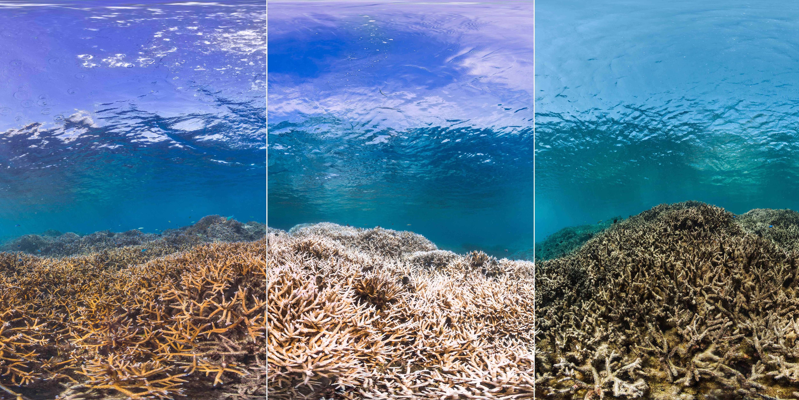

Clownfish and anemone work together to survive. They are the only fish that do not geet stung by its tentacles. In return, they help their anemones to breathe at night.
The disappearance of coral reefs could lead to a chain of mass destruction
Meet some of the inhabitants

CLOWNFISH IN ANEMONE

TURTLES
Turtles find their home in coral reefs. From the vegetable-loving species that eat sponge and algae, to their carnivore counterparts that eat animals like crabs living among the reefs, turtles find food and protection in coral reefs.

HONEYCOMB MORAY
This solitary species finds hides and finds shelter among the coral reefs, only becoming active at night to hunt for prey.
HOW SERIOUS IS IT?
An inumerable amount of species rely on coral reefs to provide them shelter or as their only source of food. Without food or anywhere to hide from predators, many marine species will rapidly vanish once coral reefs are gone. With them gone, coastal regions will begin to suffer consequences too. An acute food crisis can ensue as a result of fish dying.
Coral reefs also provide protection against coastline erosion and flooding, meaning that with them gone, many small island countries might vanish from the world. Another major consequence will be the loss of life-saving drugs. The prospect of finding a new drug in the sea, especially among coral reef species, may be 300 to 400 times more likely than isolating one from a terrestial ecosystem.

Timelapse of coral bleaching in the American Samoa (Dec 2014 - Aug 2015). Credit: The
Ocean Agency.
WHY IS IT HAPPENING?
Climate change is a major agent: a meager 1.5°C rise in global temperature can lead to the extinction of 70-90% of coral reefs around the globe. This number could go as high as 99% if global temperature rises by 2°C. When water is too warm, corals will expel the algae (zooxanthellae) living in their tissues causing the coral to turn completely white. Losing this means losing their source of food and protection.
Near-shore corals are particularly sensitive to runoff and pollution. Since coral is extremely sensitive to environmental changes, a nutrient imbalance caused by runoff from agriculture or the introduction of pollutants can cause them to bleach and die off as well. Overexposure to sunlight or extremely low tides are other factors that cause reefs to die.

American Samoa, Feb 2015. Credit: The Ocean Agency.
WHAT CAN WE DO?
One of the recognized tools that marine conservationists rely on to restore coral reefs around the globe are artificial reefs. Made from a variety of natural or synthetic materials, artificial reefs come in an infinite number of shapes and styles. The goal of these artificial reefs is generally to provide a stable growing area for corals, and habitat for fishes and all the other organisms that you would find on a natural reef.
However there are many complex factors that can make an artificial reef a success or a failure. ReefStarter wants to make the process of creating artificial reefs a fun and accessible experience by enabling everybody to participate by creating their own structures, and encouraging users to donate to their favorite ones.